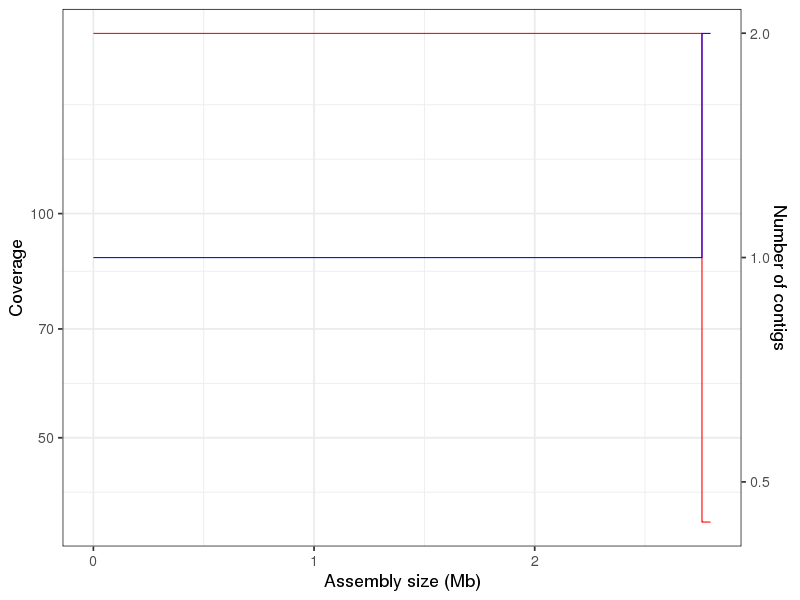
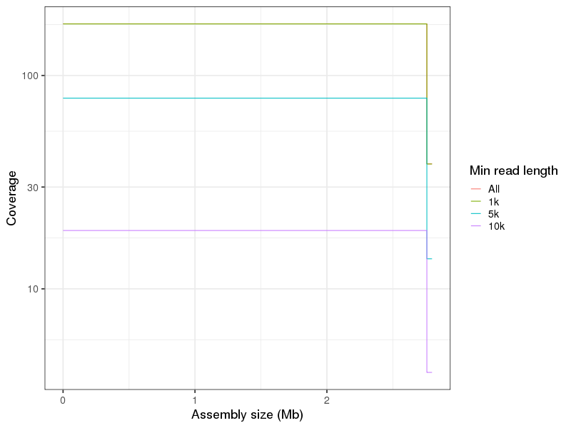
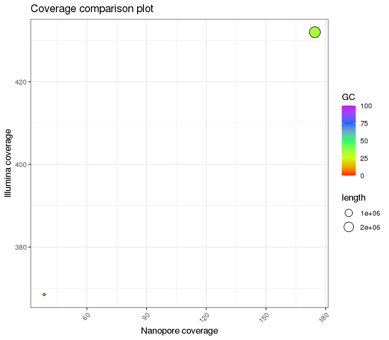
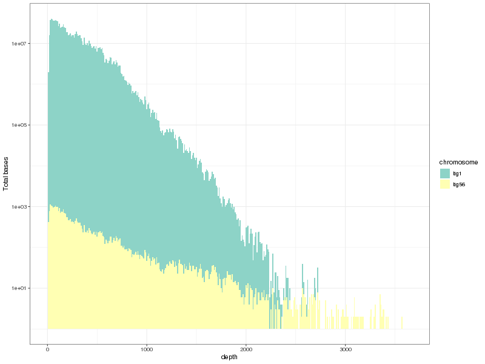

Denovo genome assembly using long reads
Generated by: George Edward Chlipala
Report date: June 3, 2020
Overview
When you publish manuscripts based on data generated at our facility, we would greatly appreciate an acknowledgement of our efforts. Please cite our facility as follows (for example):
Basic processing of the raw data were performed by the University of Illinois at Chicago Core for Research Informatics (UICCRI).
We adhere to a general policy for acknowledgements and authorship as established by the Association for Biomolecular Resource Facilities (ABRF) , and we support the following statement from the ABRF.
The existence of core facilities depends in part on proper acknowledgment in publications. This is an important metric of the value of most core facilities. Proper acknowledgment of core facilities enables them to obtain financial and other support so that they may continue to provide their essential services in the best ways possible. It also helps core personnel to advance in their careers, adding to the overall health of the core facility.
Please contact us for assistance in drafting manuscripts.
Output Files
| File | Description | Type |
|---|---|---|
| sample1.gene-AA.fa | Protein sequences of predicted ORFs for sample1 | result |
| sample1.gene-NT.fa | Nucleotide sequences of predicted ORFs for sample1 | result |
| sample1.annotation.list.txt | List of predicted ORFs for sample1 | result |
| sample1.annotation.txt | Annotations of predicted ORFs for sample1 | result |
| sample1.gff | Details of predicted ORFs for sample1 in GFF format | result |
| sample1.gbk | Annotated sequences of contigs for sample1 | result |
| sample1-contigs.zip | ZIP compressed FASTA file of contigs for sample1 | result |
Details
- Method: Porechop
-
Adapter trimmer for Oxford Nanopore reads.
Custom Parameters- -v = 0
- Method: Minimum length trimming
-
Reads less than specified length were discarded.
Custom Parameters- length = 1000 bp
Table 1. Trim statistics Download table data
| Sample | Raw reads (reads) | Raw reads (bp) | Passed trimming (reads) | Passed trimming (bp) | Passed length filter (reads) | Passed length filter (bp) | Post subsampling (reads) | Post subsampling (bp) |
|---|---|---|---|---|---|---|---|---|
| sample1 | 332722 | 815437449 | 331178 | 776217125 | 234322 | 713797864 | 134831 | 500002317 |
Details
- Method: Canu assembler
-
A single molecule sequence assembler for genomes large and small. Assembler is based on Celera Assembler for high-noise single-molecule sequencing (such as the PacBio RSII or Oxford Nanopore MinION).
Custom Parameters- genomeSize = 5m
- maxThreads = 8
- maxMemory = 60
- corMhapSensitivity = high
- corMinCoverage = 2
- Method: Error correction using Racon
-
Resulting contigs were error corrected using Racon.
- 
- 
Figure 1. Coverage plot for sample1
Figure 2. Coverage plot by minimum read length for sample1
Table 1. Assembly summary for all samples Download table data
| Sample | Statistic | Count | TotalLength | Longest | N50 | N75 | L50 | L75 |
|---|---|---|---|---|---|---|---|---|
| sample1 | Value | 2 | 2797143 | 2757963 | 2757963 | 39180 | 1 | 2 |
Table 2. Basic contig statistics for sample1 Download table data
| #ID | length | GC | coverage | C50 | C75 | C90 | cov_read1k | cov_read5k | cov_read10k | S_2mer | S_3mer | S_4mer |
|---|---|---|---|---|---|---|---|---|---|---|---|---|
| tig1 | 2757963 | 32.868 | 174.56 | 169.00 | 118.00 | 82.00 | 174.38 | 78.26 | 18.77 | 0.955 | 0.953 | 0.952 |
| tig56 | 39180 | 27.185 | 38.53 | 36.00 | 13.00 | 3.00 | 38.46 | 13.83 | 4.06 | 0.920 | 0.919 | 0.918 |
Details
- Method: Circlator to circularize assembled contigs
-
Contigs were analyzed to determine possibly circular and then sequence data were trimmed to create non-overlapping circular contigs.
Custom Parameters- --merge_min_id = 85
- --merge_breaklen = 1000
- --assembler = canu
- --bwa_opts = '-x=ont2d'
- --threads = 8
Table 1. Circlator summary for sample1 Download table data
| Contig | Circularized | Method |
|---|---|---|
| tig1 | True | nucmer |
| tig56 | False |
Details
- Method: Naive sequence correction
-
Sequence of contigs were corrected via multiple rounds of mapping read data to contigs with BWA-MEM followed by calling of major variant from resulting sequence pileup.
Custom Parameters- iter = auto
- 
- 
Figure 1. Comparision of coverage for sample1
Figure 2. Coverage plot of Illumina data for sample1
Table 1. Coverage summary of Illumina data for sample1 Download table data
| chromosome | length | avg.coverage | max.cov | min.cov | cov.90 | cov.75 | cov.50 |
|---|---|---|---|---|---|---|---|
| tig1 | 2760900 | 432 | 2736 | 0 | 93 | 214 | 395 |
| tig56 | 39246 | 368.5 | 3656 | 0 | 20 | 78 | 201 |
Table 2. Polishing results for sample1 Download table data
| Contig | % IDY | Length raw | Length polished |
|---|---|---|---|
| tig1 | 99.70 | 2757963 | 2760900 |
| tig56 | 99.32 | 39180 | 39246 |
Details
- Method: Prokka
-
Tool for annotation of prokaryotic genomes.
Custom Parameters- --kingdom = Bacteria
- --force
Table 1. Annotation details Download table data
| Sample | contigs | bases | CDS | rRNA | tRNA | tmRNA |
|---|---|---|---|---|---|---|
| sample1 | 2 | 2800146 | 2571 | 19 | 61 | 1 |